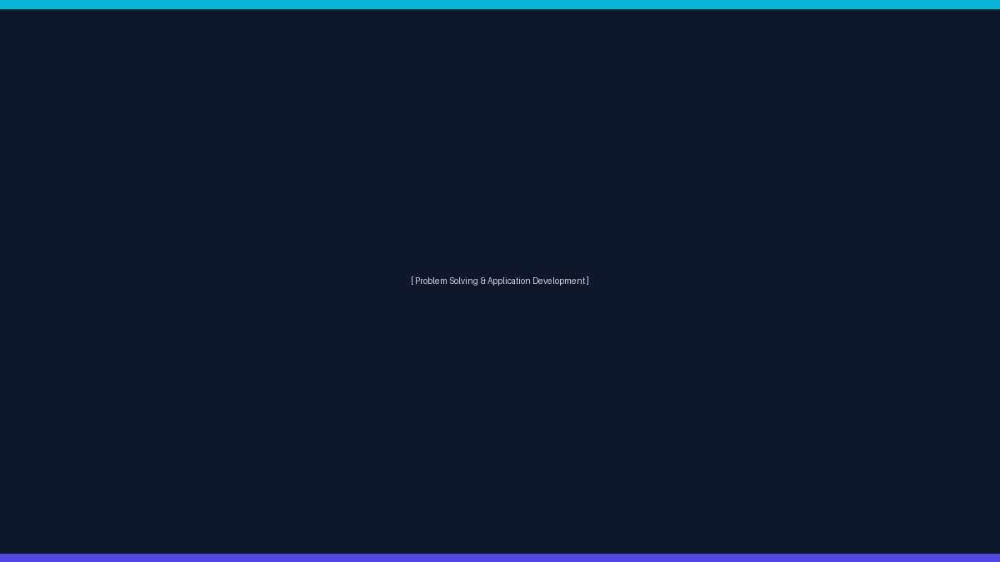

Problem Solving & Application Development
Overview
Week 2 focused on developing essential problem-solving and computational thinking skills through a series of interactive learning sessions and practical activities. Throughout the week, I explored different approaches to analyzing problems, designing logical solutions, and applying technology to solve real-world challenges. The sessions introduced creative thinking techniques, algorithm development, visual programming using Scratch, and mobile application development with MIT App Inventor.
A key highlight of the week was learning how effective problem-solving begins with understanding the problem before writing any code. Through discussions, hands-on activities, and application design exercises, I gained a better understanding of logical reasoning, algorithmic thinking, and user-centered application development. These experiences strengthened my confidence in transforming ideas into structured solutions while improving my creativity, communication, and technical skills.
Event Gallery

Problem Solving & Application Development
Objectives
- Develop computational thinking and logical reasoning skills.
- Learn systematic approaches to solving real-world problems.
- Understand algorithm design and implementation concepts.
- Explore Scratch programming and event-driven development.
- Design a simple mobile application using MIT App Inventor.
- Improve creativity, collaboration, and communication skills.
Activities
- Activity 1: Participated in the "Fugaal" interactive learning session conducted by author Mukesh Shu, which emphasized creative thinking, personal growth, and innovative approaches to solving challenges.
- Activity 2: Completed the "Think Like a Coder – EP05" session, where algorithms were explored and implemented to understand structured problem-solving and logical thinking.
- Activity 3: Learned the fundamentals of Scratch programming, including block-based programming, events, conditions, loops, and basic game or animation development concepts.
- Activity 4: Identified a real-world problem statement and designed a mobile application prototype using MIT App Inventor, focusing on user needs, interface design, and functionality.
Challenges
- Understanding different methods of approaching complex problems.
- Designing clear and efficient algorithms before implementation.
- Learning a new visual programming environment using Scratch.
- Transforming a problem statement into a practical mobile application design.
- Managing creativity while maintaining logical flow in application development.
Skills Learned
Concepts Learned
Key Learnings
- Learned that understanding a problem is the first step toward developing an effective solution.
- Improved logical thinking through algorithm design and implementation.
- Understood the basics of block-based programming using Scratch.
- Learned how mobile applications can be designed to solve practical real-world problems.
- Enhanced creativity, communication, and teamwork through collaborative learning activities.
- Gained confidence in converting ideas into structured software solutions.
Reflection
Week 2 provided valuable exposure to computational thinking and application development. The combination of creative discussions, algorithm design, Scratch programming, and MIT App Inventor helped me understand how software development begins with identifying a problem and designing an efficient solution. These activities improved both my technical knowledge and my ability to think logically while approaching real-world challenges.
Conclusion
Week 2 strengthened my foundation in problem-solving, computational thinking, and application development. By learning algorithm design, exploring Scratch programming, and developing a mobile application prototype, I gained practical experience that will support my future learning in Cloud Computing, DevOps, and Software Engineering. The week's activities encouraged continuous learning, creativity, and confidence in developing technology-driven solutions.